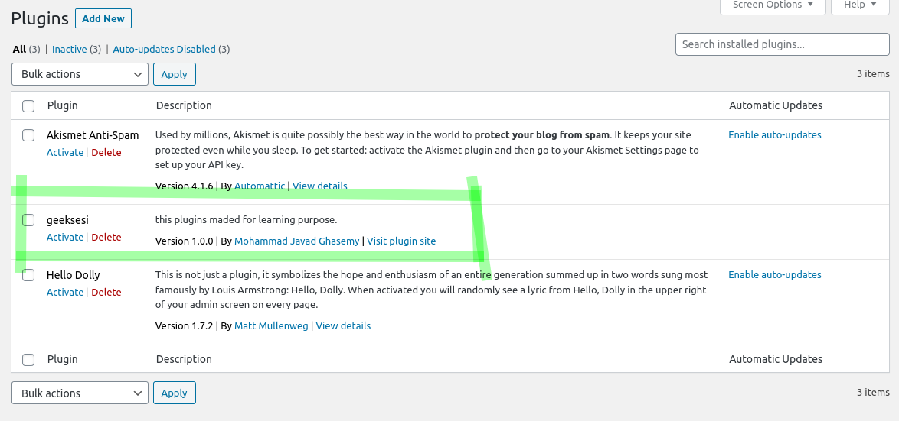

ساخت افزونه وردپرس - ساخت اولین افزونه
خب الوعده وفا. اینبار می خواهیم اولین افزونه وردپرس مون رو بنویسیم.
قبل از شروع شما نیاز به این چیزها دارید :
- به php آشنا باشید و بتونید کد بزنید و کدها رو بخونید.
- یه ادیتور متن مثل vscode - sublime - atom - phpStorm داشته باشید.
- وردپرس رو نصب کرده باشید.
خب اگه همه چیز آمادست که بسمالله. اگر هم نه که برید و پیدا کنید پرتقال فروش را.
چجوری شروع کنیم ؟
خب الان کافیه یه پوشه جدید به اسم افزونهای که میخواهید بسازید توی آدرس wp-content/plugins/ بسازید.
خب من اسم افزونم رو می زارم geeksesi و یه فایل پیاچپی توی پوشه افزونم ایجاد می کنم.
خب چیزی که تا الان داریم به این شکله :
1 | wp-content/plugins/geeksesi/geeksesi.php |
خب برای الان کار زیادی از افزونه نمی خواهیم. فقط می خواهیم که توی لیست افزونههای وردپرس مون نمایش داده بشه.
پس من محتویات فایل geeksesi.php رو اینجوری تغییر میدم.
1 | /* |
خب این کامنت رو ما اول فایل پلاگینمون قرار میدیم تا به وردپرس مشخصات افزونه و سازندش رو بفهمونیم.
الان اگه به صفحه پلاگینتون توی وردپرس برید با چنین منظره ای روبه رو میشید.

خب به همین راحتی یه پلاگین ساختیم. توی بخش بعدی کلی مطلب می گیم تا فکر نکنید همه چیز مثل این ۲ تا بخشی که تا الان منتشر کردم آسونه :)))))
مواظب خودتون باشید. فعلا